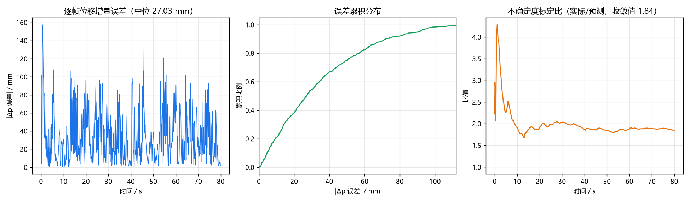
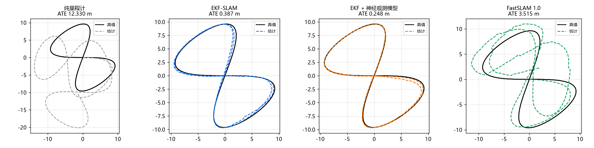
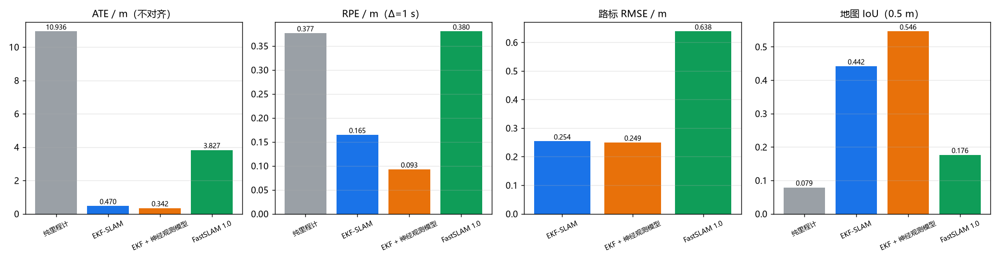

神经视觉惯性里程计与三后端 SLAM 对比
对应作业任务（2）传感器感知与任务（3）建图导航 + SLAM 同步仿真。 对比实验①：同一模型、不同 SLAM 算法。
前端是 CNN + GRU 的神经视觉惯性里程计，纯 numpy 手写前向与反向；三个后端 共用同一前端、同一数据集，只换后端，对比定位精度、地图一致性与 GPS 拒止下的退化。
1. 模块定位
GPS 拒止环境（室内、隧道、城市峡谷）下，位姿只能靠机载传感器推。本模块用 深度相机 + IMU 做神经 VIO，再在同一前端上比较三种 SLAM 后端：
| 后端 | 观测量 | 地图表示 | 复杂度 |
|---|---|---|---|
| EKF-SLAM | 立柱的 (距离, 方位) | 单高斯，位姿 + 路标联合 | |
| EKF-SLAM + 神经观测模型 | 同上，噪声由网络给 | 同上 | |
| FastSLAM 1.0 | 同上 | 粒子云 + 逐粒子路标 EKF |
课程内已有的 octree_uav_3d_pathfinding 直接用仿真器给的真值位姿建图，
没有状态估计；carla_slam_gmapping 是车、且 gmapping 是黑箱，做不了"同前端
换后端"的受控对比。课程内还没有把状态估计与建图分开评测的模块。
2. 架构
深度图 160×128 ─┐
├─ CNN(3 层, stride 2) ─┐
IMU 100 Hz ─────┘ ├─ GRU(64) ─┬─ head_p → Δp_b (3)
│ ├─ head_r → Δrpy_b (3)
│ └─ head_s → log σ² (6)
│
└─→ ┬ EKF-SLAM
├ EKF-SLAM + 神经观测模型
└ FastSLAM 1.0
│
└→ 位姿 + 路标 → 占用栅格
前端与后端之间只有 (Δp_b, Δrpy_b, σ) 一条接口，换后端不动前端一行。
/camera/depth 与 IMU 由底座 uav_mujoco_sim 提供；激光雷达的立柱观测由
landmarks.py 从射线距离里检测。
3. 神经前端
3.1 网络结构
| 层 | 形状 | 参数 |
|---|---|---|
| Conv1 | 2×48×64 → 8×22×30，5×5 /2 | 2 通道输入（深度 + 有效掩码） |
| Conv2 | 8×22×30 → 16×10×14，3×3 /2 | |
| Conv3 | 16×10×14 → 16×4×6，3×3 /2 | |
| IMU 分支 | 10×6 → 64 → 64 | 全连接 + ReLU |
| 融合 | 64 + 64 → GRU(64) | |
| head_p / head_r | 64 → 3 | 位移 / 姿态增量 |
| head_s | 64 → 6 | log σ²，限幅 [−8, 4] |
深度输入两通道：归一化深度 + 有效掩码。无回波像素也记 0，掩码把"无回波" 与"距离 0"分开。
3.2 损失
位移与姿态增量都用异方差高斯负对数似然：
网络同时预测 ：给后端提供逐帧不确定度，残差大的帧在损失里自动降权。 限幅在 ；不加限幅时训练会把 推向 0 换 loss （实测 20 轮内单帧精度退到 32 mm）。
3.3 训练
按定长片段（32 帧）切：片段内 GRU 隐状态连续、片段间清零。梯度只回传一步， 隐状态相当于额外输入特征，与在线推理时只有历史信息一致。优化器 Adam （，梯度范数限幅 1.0），25 轮，验证集为第 3 集。
3.4 前端精度
| 指标 | 值 |
|---|---|
| 逐帧位移增量 RMSE | 2.8 mm |
| 逐帧姿态增量 RMSE | 0.11° |
| 位移不确定度标定比 | 6.6（偏保守） |
标定比偏大：网络的高斯假设覆盖不了偶发的无效深度帧，后端因此偏保守。

4. 三个后端
4.1 EKF-SLAM
状态 ， 协方差 。
预测只推进位姿，雅可比 传递位姿与路标的互协方差：
均值走非线性转移， 只用于协方差；用 乘 是一阶近似，整条轨迹会累积系统偏差。
观测更新用完整的联合协方差：
新路标初始化传播位姿不确定度，补上与已有状态的互协方差：
只写对角块时，回环处路标被当作真值，位姿无法修正。
4.2 学习式观测噪声模型
经典 EKF 用固定 ，但实测测距噪声 强烈依赖距离：
| 距离段 | 真实 σ_r | 常数模型 | 学习模型 |
|---|---|---|---|
| 0.8–2 m | 0.017 m | 0.100 m（悲观 5.8×） | 0.027 m |
| 2–4 m | 0.025 m | 0.100 m | 0.028 m |
| 4–6 m | 0.028 m | 0.100 m | 0.032 m |
| 6–8 m | 0.047 m | 0.100 m | 0.043 m |
| 8–10.5 m | 0.052 m | 0.100 m | 0.049 m |
模型在真值上训练：用真值位姿与真值路标配对，残差就是纯传感器误差。 网络拟合的是 ，换算成 要补一个偏置：
写成 （欧拉常数）会少补 0.693， 系统性低估 倍——实测标定比 0.69 而不是 1.0，就是这一项。
方位残差重尾（1 m 处散布 2.3°，多数样本接近 0）； 拟合的是典型误差而非标准差，训练后补一次标量方差标定 。
4.3 FastSLAM 1.0
每个粒子带一条轨迹假设与自己的一套路标 EKF。位姿表示不同：EKF 单高斯（单峰）， FastSLAM 粒子集（多峰）。粒子权重按观测似然连乘：
两个工程细节：数据关联跨粒子共享（用加权平均地图做最近邻）， 路标更新用采样出的位姿当精确值（FastSLAM 1.0 的固有近似）。
4.4 关联门限与观测噪声解耦
χ² 门限的协方差 依赖 ：噪声模型变准后 变小， 变小，同一创新的马氏距离变大，更多真实观测被拒，每条被拒观测都生成一根 假柱子。
实测（第 0 集，3591 条观测）：
| 观测噪声 | 关联成功 | 新建路标 | 真值 30 个 | 接受时的 χ² 中位 | ATE |
|---|---|---|---|---|---|
| 常数 R | 3517 | 74 | 44 个虚警 | 0.55 | 0.45 m |
| 学习 R（门限耦合） | 3375 | 216 | 186 个虚警 | 1.21 | 0.94 m |
门限改用固定几何尺度（ m, rad）后，关联行为与噪声模型无关，两种后端之间 只剩观测噪声模型这一个差异；即固定搜索半径。
5. 建图
位姿 + 激光雷达射线 → 2D 对数几率占用栅格。整帧向量化：所有射线的采样点
一次性算出来，用 np.bincount 把同一格的命中累加，每帧 4~6 ms。
地图一致性用 IoU 评价，同时给两个分辨率：
- 0.10 m 原生：墙只有一格宽，位姿差 0.4 m 就整体错开，量的是位姿误差
- 0.50 m 降采样：块内取最大（占据优先），才是"地图画得对不对"
6. 评测指标
| 指标 | 定义 |
|---|---|
| ATE 原始 | 估计轨迹与真值轨迹逐点误差的 RMSE，不做任何对齐 |
| ATE 对齐 | 先做 SE(2) 最优对齐（Umeyama）再算，排除整体漂移自由度 |
| RPE | 隔 s 比较相对运动： |
| 路标 RMSE | 估计路标与真值路标的最近邻配对误差 |
| 形状误差 | 配对点对做 SE(2) 对齐后的残差，只反映地图形状 |
| 地图 IoU | 占用栅格与真值栅格的交并比 |
估计地图与真值地图要换到同一第一帧坐标系。只换轨迹不换路标会差一个首帧偏航
旋转（本数据集 yaw=0.965 rad，10 m 处错开 9 m），最近邻配对退化为随机——
实测 rmse 0.71 m ≈ 1 m 配对半径下随机配对的期望 。修正后 0.30 m，
形状误差 0.148 m。
7. 实测结果
平台：仿真侧 Windows 11 + Intel Core 5 220H（核显）；ROS 侧 Ubuntu 20.04 +
Humble 虚拟机（colcon build 通过）。
数据：5 集八字闭环航线，每集 80 s @10 Hz，每帧约 4.5 条立柱观测，30 根真值立柱。
7.1 GPS 正常（每 1 s 一次，σ=0.5 m）
| 后端 | ATE 原始 | ATE 对齐 | RPE | 路标 RMSE | 地图 IoU(0.5 m) | 耗时 |
|---|---|---|---|---|---|---|
| 纯里程计（前端） | 10.936 m | 5.475 m | 0.377 m | — | 0.08 | 0 s |
| EKF-SLAM | 0.470 m | 0.271 m | 0.165 m | 0.254 m | 0.44 | 6 s |
| EKF-SLAM + 神经观测模型 | 0.342 m | 0.146 m | 0.093 m | 0.249 m | 0.55 | 5 s |
| FastSLAM 1.0 | 3.827 m | 2.945 m | 0.380 m | 0.638 m | 0.18 | 1 s |
- 神经观测模型相对常数 R：ATE −27%，RPE −44%，地图 IoU +25%， 5 集里赢 4 集（第 2 集 0.603 vs 0.291 落后）
- EKF-SLAM 相对纯里程计：ATE 降低 23 倍
- FastSLAM 明显落后，且耗时只有 1 s（EKF 是 ，FastSLAM 是 ）

（轨迹图与地图图为第 0 集，标题里的 ATE / IoU 是该集数值；上表与指标图为 5 集平均。）

7.2 GPS 中断退化
| 中断时长 | 纯里程计 | EKF-SLAM | EKF+神经观测 | FastSLAM |
|---|---|---|---|---|
| 0 s | 10.936 | 0.470 | 0.342 | 3.827 |
| 5 s | 10.936 | 0.487 | 0.372 | 5.005 |
| 15 s | 10.936 | 0.514 | 0.479 | 6.940 |
| 30 s | 10.936 | 0.568 | 0.534 | 7.758 |
EKF 两个后端对 30 s 中断只退化 21%/56%（前端的位移增量精度本就到毫米级， 时间足够长时靠路标观测就能维住）；FastSLAM 退化 103%，对绝对观测最敏感。
7.3 FastSLAM 为什么落后
诊断数据（第 0 集，160 粒子）：
| 量 | 值 |
|---|---|
| 粒子位姿散布 | σ ≈ 0.03–0.08 m |
| 需要覆盖的不确定度 | 0.4 m 量级 |
| 重采样次数 / 800 帧 | 432 |
| 有效粒子数 | 118/160（权重接近均匀） |
粒子云宽 3~8 cm，需要覆盖的位姿不确定度是 0.4 m 量级。云宽由“过程噪声 × √(重采样间隔)”决定：每帧 0.018 m、约每 2 帧重采样一次，锁在 3 cm 左右。 GPS 似然在整个云上几乎相同（0.5 m 观测噪声对 3 cm 云宽），权重区分不出来， 接近满值。
过程噪声、粒子数（160→2500）、重采样比都试过，ATE 在 1.0~2.8 m 波动、无单调 改善：FastSLAM 1.0 用里程计提议分布的结构性局限，非调参问题。
8. 源码解析
uav_neural_vio_slam/core/
├── nn.py 手写 Conv2d / GRUCell / Linear / Adam
├── network.py VioNet：前向、反向、高斯 NLL、限幅
├── world.py SLAM 基准世界（30 立柱）+ 八字闭环航线
├── landmarks.py 激光雷达 → (距离, 方位) 观测
├── dataset.py 数据采集与存取
├── training.py 训练与在线推理
├── ekf_slam.py EKF-SLAM
├── fastslam.py FastSLAM 1.0
├── obs_model.py 学习式观测噪声模型
├── mapping.py 占用栅格
├── metrics.py ATE / RPE / 路标误差 / 地图 IoU
└── experiment.py 四后端对比与 GPS 中断
8.1 landmarks.py：从射线距离里挑出立柱
判据是"细"：立柱在方位向只占几个波束，墙面、地面、大方柱连成一片；再加速度 一致性（同一立柱在 ±15° 两层距离接近，地面不同）。不需要高度与姿态，可在线使用。
两个实现细节：
水平距离。detect 输出乘过 cos 俯仰角的水平距离，与二维观测模型
一致；−15° 层三维距离大 ，
8 m 处 0.28 m 系统偏差。
整组生长。逐格判孤立会丢掉柱子中部、只剩两侧边缘（实测 1 m 处拆成 1.01 m/+9° 与 1.02 m/+1°）；按候选簇整组生长后再判。
8.2 nn.py：im2col 的维度顺序
as_strided 的维度顺序与 reshape 的目标一致。顺序不一致时 reshape 按内存序
重新分组，布局被打乱；此时前向与反向仍互为转置、数值梯度校验通过（层相当于
"核权重被置换过的卷积"），只有伴随恒等式
能发现（实测 8.11 vs 6.94）。--selftest 含这一项。
8.3 metrics.py：形状误差的迭代最近点
两图之间差一个刚体变换，直接按原坐标做最近邻会因整体平移/旋转配错。
landmark_shape_rmse 三步：点数相同时先 SE(2) 粗对齐 → 最近邻配对 →
用配对点估变换再作用于全部点，迭代 3 次。扣掉整体漂移，剩下的是形状误差。
8.4 ekf_slam.py：轨迹记录不含初始位姿
reset() 里写 traj = [mu.copy()] 会使估计轨迹整体错开一帧（1.4 m/s 下
0.14 m 系统滞后）；只在 record() 里追加，与帧数一一对应。
9. 复现步骤
# 仿真侧（Python ≥3.10）
python main.py --collect --out data/vio_dataset.npz
python main.py --train --data data/vio_dataset.npz --out data/
# 任意机器（只需 numpy）
python main.py --selftest
python main.py --evaluate --data data/vio_dataset.npz --model data/ \
--out results.json --outage 5,15,30
python main.py --figures --data data/vio_dataset.npz --model data/ \
--outdir ../docs/img/air/uav_neural_vio_slam --outage 5,15,30
ROS2 在线运行见包内 README.md。
10. 依赖
- MuJoCo 四旋翼仿真与 ROS2 桥接底座
（提供
/camera/depth、/lidar/points、IMU 与真值位姿）